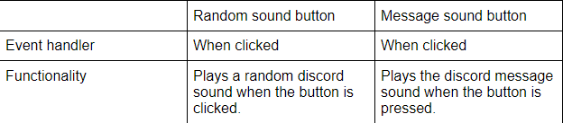
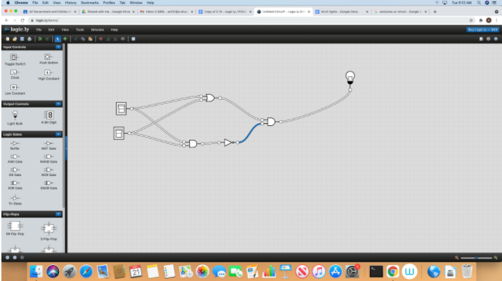
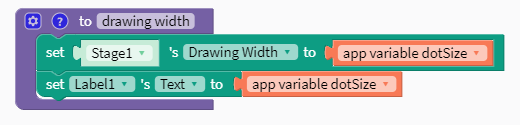
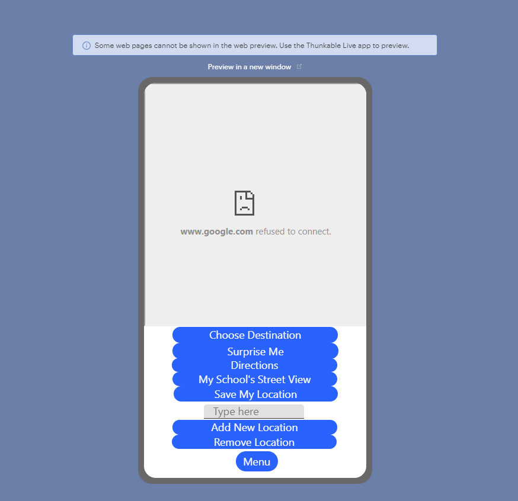

2.2 - I Have A Dream
1) In your own words, describe what event driven programming is. What event handler was used in the I Have a Dream app? How was it used?
Event driven programming is when you develop something that responds to user interactions using things like conditional statements. We used the when clicked event handler to detect when a user wanted to play or pause a sound.
2) Is it possible to create an app without event driven programming? Explain.
If you were to make an app without events, there would be no interaction. It would basically just be there to see.
3) What elements and components make up the User Interface (UI) for the I Have A Dream app?
A title and a picture of MLK.
4) What are some of the elements that make up the UI for a car? A vending machine?
Some of the elements that make up the user interface for a car would be the seats, steering wheel, pedals and the speedometer. For a vending machine, there would be visible goods, buttons and a way to pay.
2.3 - Algorithm Basics
1) (POGIL) Write an algorithm using the 4 simple commands to navigate the robot through the maze in the POGIL question listed in your online textbook.
MOVE_FORWARD
MOVE_FORWARD
ROTATE_RIGHT
MOVE_FORWARD
MOVE_FORWARD
MOVE_FORWARD
MOVE_FORWARD
ROTATE_LEFT
MOVE_FORWARD
2) (POGIL) Write an algorithm using repetition control structures to navigate the robot through the maze referenced above.
REPEAT 2 times
MOVE_FORWARD
ROTATE_RIGHT
REPEAT 4 times
MOVE_FORWARD
ROTATE RIGHT
REPEAT 2 TIMES
MOVE_FORWARD
3) (POGIL) Include a description or a photo of your drawing of a maze that the general algorithm in the POGIL exercise CANNOT solve.
Since the robot can move anywhere, there would have to be something blocking the robot from reaching the goal.
4) (POGIL) Write an algorithm for washing a stack of 10 items that are cups and dishes mixed together, where the rule is that cups are washed in hot water and dishes in cold water. Use simple commands like hot_wash and cold_wash. You may also use the control structures IF and REPEAT n times. Identify the parts of your algorithm that are examples of Sequence, Selection and Repetition.
REPEAT 10 times (repetition)
IF cup (selection)
hot_wash (sequence)
IF dish (selection)
cold_wash (sequence)
2.4 - I Have A Dream, Part 2
1) What components make up the User Interface (UI) for this enhanced version of the I Have A Dream app?
We mainly had pictures of MLK and Malcolm X and instructions on how to use the app.
2) A computing innovation includes a program as an integral part of its function. We've just created a mobile app, which is certainly an example of a computing innovation.
Give at least 3 examples from your own experience of computing innovations that you've used or seen and describe the function/purpose of each.
I have played video games which are an example of computing innovations. They are meant to entertain you. I have also used google chrome, which is a search engine you can use to browse the internet. Lastly, I have used youtube which is a site for watching and uploading videos.
2.5 - Mobile Devices and Apps: Hardware and Software
1) Which hardware and software component(s) do you feel least confident describing?
I feel confident with describing pretty much everything.
2) Give an example of a special purpose computer that you are familiar with or use in your everyday life and what problem it addresses for you.
A special purpose computer that I use often is my calculator. It helps me solve complex math problems that I can not do mentally.
3) Explain in your own words the difference between running your app by "Connecting to the Companion" and running your app by "Packaging" it.
“Connecting to the Companion” will send the code to the device which will interpret the code and run the program. “Packaging” it will translate the entire program to a binary code file.
4) As we learned in this lesson, a byte is about the same amount of memory as a character, such as the letter 't'. There are approximately 7 million characters in all of the Harry Potter novels combined. How many bytes of memory would all of the Harry Potter novels take up? How many copies of the Harry Potter novels would fit on a 7 Gigabyte flash drive. (Remember 1 Gigabyte is 1 billion bytes.)
All the Harry Potter novels would take up 7 million bytes (7 megabytes). A 7 Gigabyte flash drive would hold 1000 copies of all the Harry Potter novels.
2.6- The Internet and the Cloud
1) In your own words, give a sentence that would explain to a friend the difference between the WWW and the Internet.
The WWW is a collection of data in web pages and other related things. The internet is a connection between computers throughout the world.
2) (POGIL) List a beneficial effect and a harmful effect for a social media app that you discussed in your POGIL group. Are the effects on society, culture, or economics? Include a screenshot of the Venn diagram you made with your group.
Social media makes it easy to find people and communicate but it can be harmful because you may not know these people in real life and what their intentions are. I think the effects are on society, culture and economics but mainly on society.
3) (POGIL) If you were a developer of one of the social media apps that you discussed, how would you reduce the harmful effects?
I would make sure to alert the user what information they are putting out there and tell them who can access their information before they do things.
2.7 - I Have a Dream and Soundboard Projects
1) Paste a link (or embed) the video you created for your Soundboard App.
2) Describe the functionality of your soundboard app shown in your video.
We have 5 buttons that play and pause our individual sounds. We also have a randomizer button that plays a random sound.
3) Describe the purpose of your app. Why did you create it and how does it allow you to express yourself?
The purpose of the app is to play sounds from discord. We created it because both of us use discord pretty often.
4) Create a 3x3 table that includes two UI components in your app, the event handler used for each component, and the functionality the component contributes to your program.

5) Reflect with your partner on a difficulty you had with coding this app. How did collaboration help you overcome the challenge?
I believe the hardest part was coming up with the theme for the sounds. We both brainstormed ideas and picked the best one.
2.8 What is Abstraction?
1) Write an explanation of abstraction, including at least one example, in your own words.
Abstraction is generalizing a complex idea to make things easier and more efficient. An example of an abstraction would be a variable.
2) Give 3 examples of abstractions in everyday life not identified in the lecture.
People, food, houses.
3) Identify a specific example of software, a mobile application, or a website and explain how it is an abstraction.
A calculator is an abstraction because it is generalizing things that can make calculations and it does not go into the very specifics of what exactly it does.
2.9 - Binary Numbers
1) What decimal value is represented by the binary number 0011 1010 0011 ?
931
2) Write your birthday in the form MMDD. Drop any leading zeros, then convert this form of your birthday to binary.
August 6 → 806 → 1100100110
3) The binary number system is base 2 and has 2 digits. The decimal number system is base 10 and has 10 digits. The octal system is base 8. How many digits does it have? What are they, starting at 0?
The octal system has 8 digits (0,1,2,3,4,5,6,7,8).
4) Each student that enrolls at a school is assigned a unique ID number, which is stored as a binary number. The ID numbers increase sequentially by 1 with each newly enrolled student.
4a) If the ID number assigned to the last student who enrolled was the binary number 1001 0011, what binary number will be assigned to the next student who enrolls?
10010101
4b) What number will be assigned to the 10th student after the number 1001 0011 is assigned?
10011101
2.10 Hardware Abstractions: Logic gates
1) (POGIL) Insert a screenshot of your Logicly diagram for the Exclusive-OR circuit below.

2) (POGIL) Consider these three things: The OR gate (i.e., the physical circuit), the Boolean OR function (as defined by its truth table), and the OR symbol. How would you arrange them from most abstract to least abstract? And what criterion would you use to determine their order?
OR symbol, Boolean OR, then OR gate. I determined this by how specific each thing was.
3) Consider these three things: A binary digit (e.g., 1 or 0), the flip-flop circuit diagram (), and the flip-flop circuit (i.e., the physical circuit). How would you arrange them from most abstract to least abstract and what criterion would you use to determine their order?
The flip-flop circuit diagram, the flip-flop circuit then the binary digit. I arranged them by how specific and complex a term was.
2.11 - Impacts of CS: The Digital Explosion
1) What is a bit and what does it mean to say that "it's all just bits"? (Koan 1) Give examples of the things today that are stored in bits.
A bit is a binary digit. When people say “it’s all just bits”, it means that everything that is digital is made possible with bits. Things that are stored in bits are characters, images, and videos.
2) In your own words, describe Moore's Law.
Moore’s Law is basically just a prediction that computers get twice as powerful every two years or so.
3) Give an example of how the digital explosion is "neither good nor bad" but has both positive and negative implications.
Electronics can help us do many things like access social media. Social media is both good and bad because it makes communication very easy but it also causes problems like the leaking of personal information.
4) Find a news article that talks about the positive or negative impacts of a computing innovation.
4b) Summarize the article in a few sentences.
It first talks about how much social media is used. Then it talks about how it makes it very easy to communicate and learn. Then it goes on to talk about how it can cause problems like self-image ones.
4c) Is the computing innovation itself positive or negative? Explain your answer.
I think social media itself is positive because it was developed to be a useful innovation. It is just that there are some bad people out there.
4d) How have people used the computing innovation in positive and/or negative ways?
People nowadays use it to communicate easily. There are some people out there that use it to trick/scam people, which is a negative thing.
3.2 - Paint Pot Tutorial
1) Explain the meaning of the statements shown here, both in AP CSP pseudocode and Thunkable. For example, suppose the variable X has the value 10 before the statement is executed. What value would it have after the statement is executed?
X <-- X + 1 set global X to global X + 1
These statements add 1 to the variable X. For example, if X was 10, X would be 11 after these statements.
2) One aspect of abstraction is that it helps to reduce details to focus on what's relevant. How does the use of a variable, such as dotsize, instead of a value, such as '5', help to reduce detail and focus on what is essential in this program?
Using a variable helps us just represent a value we want instead of specifically using the exact value.
3.3 - Representing Images
1) Decode this message by converting it from binary to ASCII: 1000001 1110000 1110000 0100000 1001001 1101110 1110110 1100101 1101110 1110100 1101111 1110010 0100000 1010010 1001111 1000011 1001011 1010011 0100001 You can use this chart to help you:
App Inventor ROCKS!
2) Describe what it means to say that JPEG is a lossy compression technique and whether or not it affects the quality of camera pictures.
It means that JPEGs will compress the file so that it takes less space but it will also lower the quality of the camera pictures in this case.
3) Give a specific example of a binary sequence that can represent more than one type of data -- e.g., a number, a color, a character -- and describe how to interpret its different values.
001 is a binary sequence that can represent a number and a color. It depends on the context. If it is a number, it can be interpreted as the decimal number 1. If it is a 3-bit color, it can be represented as blue.
3.4 - Paint Pot Projects
3.5 - Paint Pot Refactoring and Procedural Abstraction
1) When looking at the code for a program, what are some indications that it should be refactored?
Code should be refactored when there is redundant code and when it is hard to read.
2) Insert a screenshot of the procedure from your app below.

3) Explain why procedural abstraction is important in programming.
Procedural abstraction is important because it allows us to reuse code and group together those instances under a function.
3.6 - Error Detection
1) (POGIL) Describe an algorithm for identifying the card that was flipped.
The the number of cards that was face up in that row/column was odd, the added card would be face up. If it was even, it would be face down. The last card to fill in the last slot at the end would be face up if a row/column of added cards had an odd number of cards face up. Otherwise, it would be face down. Just find the card that does not match this pattern and that is the one that was flipped.
2) (POGIL) The card "trick" shows that it is always possible to identify the card that was flipped as long as only one card was flipped. Would it be possible always to determine if an error occurred if two cards were flipped?
Although it may sometimes be possible, it will not be possible all the time.
3) Name a situation where data is represented with bits. Then describe the consequences of a flipped bit for the situation you identified.
The time on my computer is represented by bits. If a bit was flipped, I would not have the right time.
3.7 - Parity Error Checking
1) Explain how the error card trick from the Error Detection lesson uses a parity scheme. Was it an even or odd parity scheme?
The card trick uses a parity for the rows/columns. It was an odd parity scheme because it only made the card face up if the parity had an odd number of cards that were face up.
2) What are some of the limitations of using parity bits for error detection?
It can not detect multiple errors.
3) Another type of error detection is a check sum. Research what a check sum is and then describe it in your own words. Can a check sum identify where an error occurs?
A check sum is a value that comes from data and it is used to detect when there is an error. Check sums can not detect where an error is, it can only detect if there is an error.
4) Explain in your own words the difference between error detection and error correction. Describe how the error correction process used in the video above allows the computer to fix errors.
Error detection only allows for an error to be found. Error correction is finding the error and fixing it. In the video, they added bits to check for other bits and automatically correct the bits if they were wrong. It was using something like a parity at the intersection of the bits.
3.8 - Map tour Tutorial
1) Why is a list a useful data abstraction, or abstract data type (ADT), in programming?
A list allows us to group data and put them all under a general idea.
2) How are lists used in this app? In your answer, consider how a user would add new destinations to the tour.
Lists in this app are used to store the destinations. A user would have to append destinations to the list somehow.
3) How do APIs simplify complex programming tasks?
They allow us to access prewritten tools, data, information, etc.
4) Pick an app that you use on your device (e.g. Twitter or Google Maps) and see whether it provides an API and some of the functions you can control with it. Describe your findings below.
I found out that Google Translate has an Api. It lets you make limited requests for free and returns a object containing many other objects. It was quite complicated and hard to understand the whole process.
5) How is GPS used in this app? Do some research to find out how GPS works and describe it here in a couple sentences.
The GPS in this app is used to get your location and return latitude and longitude values. Satellites are devices that orbit the Earth which allow for a GPS to work. The send out signals and a GPS will pick it up, decode its information and use that to find your exact location.
6) Insert screenshot(s) of the Design AND Code views for at least one of the "Enhancement Mini Projects" you made in the MapTour app.
I made a button to display a street view of Burton.


7) Identify the name of a variable you represented with a list. Describe what the data contained in this list is representing.
Destinations was a list that contained the list of destinations that I could display with the web view.
3.9 - Map tour and Thuankable's Stored Variable
1) What does it mean to say that data is 'persistent'?
It means the data is still stored even after the shutdown of where it came from.
2) What is the difference, in terms of where data is located, for data to be stored in a global variable versus in a database?
For local variables, it is located in the RAM. For databases, it is located in hard drives.
3) Insert screenshots of the enhancements that you made to your MapTour app.
I made a button to display a street view of Burton and made the menu grouping to be mobile friendly.


4) Pick one of your enhancements. Explain in detailed steps how the code for it works in enough detail that someone else could recreate it.
One of my enhancements was a button to display the street view of Burton. For the code, I changed the URL of the web viewer to the url for the street view of Burton when the My School's Street button is clicked.
5) Consider the apps you've developed so far.
5a) List all the different events your apps have responded to?
My apps respond to clicking, when a condition is met, or when the finger is dragged across the screen.
5b) I think some other events that the app can respond is when the device picks up a GPS signal and determines the location. Looking through thunkable, they did have location sensor. They also had a timer which could be used for countdowns or making a clock.
3.10 Impacts of CS: Electronic Documents
1) What is metadata? Give an example of how a piece of metadata could be used to increase the usefulness of an image or document.
Metadata is data or information for some other data. For an image or document, metadata could make them more useful by storing more specific information about those files themselves. For example, metadata could carry the edit history.
2) What is a model?
A model is a representation of a real life thing but not with all the details.
3) What's the difference between a raster image and an ASCII representation of a text document?
The raster image would be shown by dividing the pixels. ASCII would translate it to numbers then display it. For text documents, ASCII is much better.
4) What are filename extensions? What are they used for?
Filename extensions represent what type of file it is. For example, there are pngs, mp3s, mpegs, etc.
5) What is lossless representation? What is lossy representation? What are the trade-offs in using each representation?
Lossless means there is no data being lost. Lossy means that a little bit of the unimportant detials are lost. Lossy gets you the full data back, but lossy takes less storage.
6) What is steganography and what is it used for? Describe in your own words the steganography algorithm used in the activity.
It is used for hiding a secret message in something that is not secret. The algorithm is to hide a 0 bit if its odd and a 1 bit if its even.
7) What would you have to do to delete a document from your computer so that it could not possibly be read by anyone else?
You would have to zero it out. By just deleting it, you are only getting rid of the index but the data is still sitting there in its oritinal position of bits on the hard drive somewhere. You must replace those strings of bits with 0's or 1's.
8) What is free and open source software? Provide an example.
It is software that you can freely use to do anything and the source code is out there for people to improve upon.
9) How has retouching become a controversial issue? Give an example.
Retouching makes this ideal and not really how they are or how they are supposed to be. This can be very decieving. For example, a lot of people use filters for their pictures online before posting them. The result image is almost flawless and not really how it is supposed to be, tricking many others.
10) Would you rather own a camera (or camera phone) with a higher number of megapixels or lower? Explain.
I would like something in between. I would need good enough quality for it to be enjoyable, but I also do not need the highest of resolutions because that would take too much storage.
11) Other than digital images, what might be an example of a computer model? Explain your answer based on the definition of a model.
A model of a table I build on CAD is a model. This is because I am representing a real life object, which is the table.
12) The code that implements Thunkable is open source and it has mainy positive impacts, mainly affects students . Find another example of open source software and describe its positive impact on education, business or society.
Python is an example of something that is open source. Python is a very famous programming language and pretty much all corporations you have heard of use it. It allows people to quickly build projects because of its simplicity and allows for many beginning programmers to learn code easily.
4.2 - Lights Off Tutorial
1) This app presents a new type of event which you haven't encountered before.
What is that new event? How often is it triggered?
It is when the timer fires. It is triggered every time the timer counts up to the given amount of time.
2) Consider the apps you've developed so far. Can you list all the different events your apps have responded to? What other events do you think an app can respond to? Explore some of the components in App Inventor and see what event handlers they have.
I have used event handlers for when something is clicked and when a timer fires. Maybe apps can respond to when a person reaches a certain location tracked by the GPS.
3) What are the advantages of writing procedures in programming? Use the procedures you wrote for this app as examples in your response.
Procedures allow you to break up and reuse code. For example, I have a procedure to move the sprite randomly. I can group the code blocks I need in there and when I need the function, I can simply call it as many times I want, allowing for me to reuse my code.
4.3 - Lights Off Projects
1) There are multiple methods for developing software and many are similar to Design Thinking. How would you map the steps in Design Thinking onto the following phrases commonly used when developing a software program?
I would put empathize and define into investigating. I would put ideate with designing and prototype with prototyping. Finally, I would put test with testing.
2) For each of the THREE enhancements that you implemented (i.e., Scoring, Winning Score, and Reset):
2a) Describe the function of the enhancement.
The function of scoring is to give the players a score for hitting the sprite. The winning score moves the player on to the next stage of the game or ends it after the beat the last stage. The reset feature restarts the game.
2b) Give a brief description of the enhancement.
When I click on a piece of trash, it should give me a certain amount of points depending on the multiplier. When I reach around 4000 points per stage, I can progress. When I click the reset button, I am back on the first stage.
2c) Provide screenshots of important blocks and describe how you used them to solve certain programming problems.

This event allows us to detect a miss when the user clicks on the canvas and misses the sprite. Our app variable "clicked" is true when the user clicks on the canvas. If it is false, it means they missed. This is what this event and conditional is checking for.
3) Describe in general what the reset procedure does.
It resets the game back to how it is when you open up the app.
4) Describe how the reset procedure contributes to the overall functionality of the program.
The reset procedure clears things like variables and sets things back to their normal state.
4.4 - Logo, Part 1
1) Include a screenshot of your app's face drawing AND the code involved, showing the use of a loop and a procedure.


2) Describe how two of the algorithms (procedures that you wrote) in the code combine to form a bigger algorithm (the drawFace procedure).
The mouth procedure and outline procedure both draw their own things and can be combined to draw a portion of the face.
3) Describe how the drawFace procedure contributes to the overall functionality of the program.
The drawFace procedure combines all the other smaller procedures together to draw the face.
4) Explain in detailed steps how the algorithm implemented in your drawFace procedure works.
Your explanation must be detailed enough for someone else to recreate it.
We first draw the outline of the face, by moving forward and making 90 degree turns to form a square. Then we draw the eyes by moving around a bit more and drawing smaller squares, to resemble the eyes. We then move down a little and draw a horizontal line of a certain length for the mouth. We then move the arrow back to the start. Also, the pen is lifted up when repositioning and down when drawing only.
5) What weaknesses do you find in using the procedures (the abstractions) you were given -- forward, turn -- for drawing simple shapes?
We could only make 90 degree turns which means that we could only make shapes like rectangles or squares.
6) How would you change the definitions of these procedures to make it easier to draw shapes?
Give a specific example that illustrates how a more powerful set of procedures would improve things.
I would make it so that my turn function takes in a paramenter for the angle degree of turn. For example, if I wanted to draw a triangle, I would pass in 60 so that I could make 60 degree turns.
4.5 - Coin Flip Simulation Tutorial
1) Insert a screenshot of your CODE AND DESIGN for Coin Flip, Part 1
I did my part 2 project over my part 1 project because of the lack of project space on thunkable and did not manage to save a screenshot.
2) Insert a screenshot of your CODE AND DESIGN for Coin Flip, Part 2


3) After completing Part 2 of the Coin Flipping app, test it with 20 flips & compare the results to your "human" coin flip (which you should've done for a Warm Up on Monday, 11/10/21). Does the CoinFlip app simulate true randomness? Why or Why not?
I think the coinflip app does simulate true randomness because there is no predictable method of getting the output.
4) Write an if/else statement to express the following real life situation. Mary likes ice cream and always chooses chocolate unless there is no chocolate in which case she chooses strawberry. But if there’s no strawberry either then she settles for vanilla, which, for some reason, is always available.
If chocolate is available, get it
Else if strawberry is available, get it
Else get vanilla
5) We didn’t need it for the loop in this lesson, but the number element in the For each number loop is a local variable whose value changes automatically on each iteration of the loop. For example, in this loop number would start at 1 and then go to 2, 3 and 4. And this value can be used in the body of the loop, as shown in this example. Given that, trace through this loop and figure out what value global sum would have when the loop finishes.
Global sum would be 10 after the loop finishes.
6) Thunkable's random-integer block is an abstract model of randomness -- i.e., an abstraction of real randomness such as flipping a real coin. What would you say about the random-integer block if you ran the coin flipping simulation 10,000 times and the result was that it came up heads 55% of the time?
I would say that it was close to perfect but not quite.
4.7 - Pseudo Rnadom Numbers
1) Consider the following Dilbert cartoon? Would it be possible for a PRNG to spit out 6 NINEs in a row?
It would be possible but very unlikely.
2) Are slot machines fair? Why or why not?
They are not fair because their chances are rigged.
3) Is it possible to devise a method that would allow you to win consistently on a slot machine?
No, because it still has randomness to it.
4.8 - Real World Machines
1) What are the main differences between Bill Nye's solar system model and the Second Life model?
Bill Nye's model is more accurate while the Second Life model is more general.
2) (POGIL) What would happen if there were lots more wolves than there are bunnies? Would the wolves live forever? Record your hypothesis, prediction and experiment results.
I would hypotesize that the wolves would eat all the bunnies quicker and then die out because of the lack of food. My experiment with more wolves confirms my hypothesis.
3) (POGIL) This model chose to include certain features and exclude other features. For example, this simulation only includes rabbits, wolves, and grass but there are other predators of rabbits and other food sources for rabbits. Why do you think the creators focused on these data elements and not others? How might this introduce bias (concentration on or interest in a particular area) into the simulation?
The creators did this so that they could model the interaction strictly between the wolves, rabbits and the grass.
4) A city's fire department is using simulation software to analyze how a fire in an apartment complex might spread under a number of conditions. Consider the benefits and limitations of using a simulation instead of studying the real thing.
The simulation might not be as accurate but it will definitely be more safe.
5) Pick a model you use in your everyday life. What details does it capture and what details does it omit?
A model would be a path to school. I could represent things like how long it would take to get to school when given things like my average speed, but it omits details like slope of the path, making it somewhat inaccurate.
4.10 - Impacts of CS: Privacy
1) [Activity Part 1] Earlier in the course, you built the Map Tour app.
1a) In the final version, what data, including data type, is collected from the user?
Their location is being collected.
1b) Does the user know the data is being collected?
Possibly, but I do not have labels on my app explicitly telling them that.
1c) Can they opt out of providing data and still use the app?
If they get the option to and do decide to opt out, they will lose some functionality of the app.
2) [Activity Part 2] How have social media platforms such as Twitter, Instagram, Snapchat, etc. affected our privacy?
These platforms have our personally identifiable information and most people are unaware of it.
3) [Activity Part 3] Is it possible to identify someone, perhaps a patient, knowing just the gender, birth date, and zip code? Why or why not?
It is possible because your information is probably stored somewhere on the internet. By looking through people who have the same zip code as you, they can identify if it is you by matching other information like birthdays and gender.
4) [Activity Part 4] Name the computing innovation you explored. Paste your paragraph from Activity Part 4 here.
Steam is a platform for video games. It takes in your information when you make a new account and stores it. Most of the data will remain private and will not display on profiles. It is up to the user for what they want to display. For example, they could display their country or not if they did not want to.
5) [Blown to Bits Chapter 2] Is the Privacy Act effective? Explain why or why not.
I think the privacy act is effective because it stop the government from using stuff against you in calls. Access to the information is needed for this but at least it would be able to used against you because it was not obtained with a warrant.
6) [Blown to Bits Chapter 2] Are you willing to trade some of your privacy for the convenience of having a computer or a company recommend products to you? Why or why not? Under what circumstances?
I would definitely not give up my information just for some product recommendations. I don't need product recommendations from companies in the first place so this was an easy choice.
7) [Blown to Bits Chapter 2] How do we leave digital "footprints and fingerprints?" Do you think this is important for everyone to know? Why or why not?
We leave footprints and fingerprints by simply giving up data that can be used to identify us. I think it is important for everybody to know because people might leave some really sensitive information online and somebody could find it.
8) What is the Patriot Act and what is its significance?
The Patriot Act gave the government more surveillance powers. It compromised our privacy for our safety.
9) What is the secret program PRISM about? Describe why it's a positive and/or negative implication in your personal life.
PRISM is a tool that allowed the NSA to get data from tech companies like Facebook, Google and Apple. While it probably keeps people more safe, privacy is sacrificed. PRISM can access many things from you that is online like your emails and files inside the cloud.
10) SEARCH THE WEB for a recent news story that deals with privacy. LINK to the article and then write a paragraph summarizing the article, including any beneficial or harmful impacts on privacy.
Article link: https://www.wired.com/story/dont-give-users-control-over-data/
This article talks about how data is a big responsibility. Companies can take their users information and do things like sell it, but having users taken control of their own data is also a problem because of how big and dangerous the internet is. It talks about possible solutions and next steps to take.